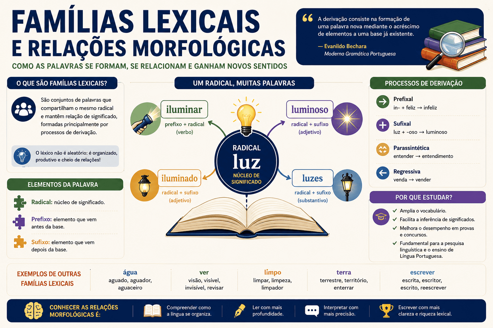

Famílias Lexicais e Relações Morfológicas: como as palavras se formam e se relacionam
A Morfologia estuda a estrutura, a formação e a classificação das palavras. Entre seus objetos de investigação estão as famílias lexicais, conjuntos de palavras que compartilham um mesmo radical e apresentam relações de significado decorrentes dos processos de derivação. Compreender essas relações permite ao estudante ampliar o vocabulário, interpretar palavras desconhecidas e reconhecer os mecanismos de produtividade da língua portuguesa, conhecimentos frequentemente exigidos no ENEM, no PAES UEMA, em vestibulares e concursos públicos.

Diferentemente da anáfora e da catáfora — mecanismos próprios da coesão textual —, as relações morfológicas dizem respeito à organização interna do léxico, isto é, à maneira como novas palavras são formadas a partir de outras já existentes. Esse processo revela que o vocabulário de uma língua não constitui um conjunto aleatório de unidades, mas um sistema organizado por regras estruturais e semânticas.
O que são famílias lexicais?
As famílias lexicais são conjuntos de palavras que possuem um mesmo radical, conservando entre si uma relação de significado. Essas palavras surgem principalmente por processos de derivação, embora possam apresentar diferentes classes gramaticais.
Segundo Evanildo Bechara, a derivação constitui um dos principais mecanismos de expansão do vocabulário, permitindo que uma mesma base origine diversas palavras semanticamente relacionadas.
"A derivação consiste na formação de uma palavra nova mediante o acréscimo de elementos a uma base já existente." BECHARA, Moderna Gramática Portuguesa.
Desse modo, compreender uma família lexical significa compreender como o significado básico de um radical pode ser ampliado por diferentes recursos morfológicos.
Radical, base e afixos
Para compreender as famílias lexicais, é necessário distinguir alguns conceitos fundamentais da Morfologia.
- Radical: elemento comum responsável pelo núcleo de significado.
- Base: palavra que serve de ponto de partida para a formação de outra.
- Prefixo: afixo acrescentado antes da base.
- Sufixo: afixo acrescentado depois da base.
Esses elementos permitem a criação de novas palavras sem que o núcleo semântico seja totalmente perdido.
Derivação e formação das palavras
A derivação é um dos processos mais produtivos da língua portuguesa. Ela possibilita a criação de novas unidades lexicais por meio do acréscimo de prefixos, sufixos ou outros mecanismos morfológicos.
Margarida Basílio observa que a produtividade lexical representa uma característica essencial das línguas naturais, permitindo que novos vocábulos sejam continuamente incorporados ao sistema linguístico.
"O processo derivacional constitui um dos mecanismos fundamentais de expansão do léxico das línguas naturais." BASÍLIO, Margarida. Formação e Classe de Palavras no Português do Brasil.
Principais tipos de derivação
- Derivação prefixal;
- Derivação sufixal;
- Derivação prefixal e sufixal;
- Derivação parassintética;
- Derivação regressiva;
- Derivação imprópria.
Exemplos de famílias lexicais
Observe algumas famílias de palavras bastante produtivas na língua portuguesa.
| Palavra-base | Palavras derivadas |
|---|---|
| água | aguado, aguaceiro, aguador |
| luz | luzes, luminoso, iluminar, iluminado |
| limpo | limpar, limpeza, limpador |
| ver | visão, visível, invisível, revisar |
| terra | terrestre, enterrar, território |
Embora algumas dessas palavras apresentem alterações fonéticas ao longo do processo histórico da língua, todas mantêm vínculos morfológicos e semânticos identificáveis.
Relações de significado entre palavras
As famílias lexicais demonstram que o significado das palavras não depende apenas do radical, mas também dos afixos utilizados durante a derivação.
Observe alguns exemplos.
- feliz → felicidade: formação de substantivo abstrato.
- feliz → infelizmente: formação de advérbio.
- legal → ilegal: prefixo com valor de negação.
- humano → desumano: alteração semântica por prefixação.
Importância das famílias lexicais para a leitura
Reconhecer o radical de uma palavra permite inferir significados mesmo quando o leitor nunca teve contato com determinado vocábulo.
José Carlos de Azeredo afirma que o conhecimento dos mecanismos de formação das palavras favorece tanto a leitura quanto a produção textual, pois amplia a competência lexical do falante.
"O domínio dos processos de formação de palavras amplia significativamente a competência lexical do usuário da língua, favorecendo a compreensão e a produção de textos." AZEREDO, José Carlos de. Gramática Houaiss da Língua Portuguesa.
Essa habilidade é particularmente importante em textos acadêmicos, científicos e literários, nos quais aparecem frequentemente palavras derivadas de baixa frequência de uso.
Famílias lexicais em provas e vestibulares
Questões de Morfologia normalmente exploram a capacidade do candidato de identificar o radical, reconhecer processos de derivação e compreender a relação de significado existente entre palavras da mesma família lexical.
No ENEM e no PAES UEMA, esses conhecimentos costumam aparecer associados à interpretação textual, exigindo do estudante não apenas conhecimento gramatical, mas também competência para compreender o funcionamento do léxico dentro do contexto.
Exemplo comentado
A palavra ilegalidade pode ser decomposta em:
i- + legal + -idade
Nesse caso:
- i-: prefixo de negação;
- legal: base lexical;
- -idade: sufixo formador de substantivos abstratos.
O significado final resulta da combinação entre esses elementos morfológicos.
Atividades sugeridas
- Construir mapas de famílias lexicais.
- Identificar radicais em textos jornalísticos.
- Classificar os tipos de derivação.
- Criar novas palavras utilizando prefixos e sufixos.
- Pesquisar palavras de origem latina e observar sua produtividade.
Conclusão
O estudo das famílias lexicais demonstra que o léxico da língua portuguesa constitui um sistema organizado por relações estruturais e semânticas. O reconhecimento dos radicais, dos afixos e dos processos derivacionais fortalece a competência lexical, amplia o vocabulário e favorece a leitura, a interpretação textual e a produção escrita. Por essa razão, trata-se de um conteúdo indispensável para estudantes da Educação Básica, candidatos ao ENEM, ao PAES UEMA, a vestibulares e a concursos públicos.
Referências
- AZEREDO, José Carlos de. Gramática Houaiss da Língua Portuguesa. São Paulo: Publifolha.
- BASÍLIO, Margarida. Formação e Classe de Palavras no Português do Brasil. São Paulo: Contexto.
- BECHARA, Evanildo. Moderna Gramática Portuguesa. 39. ed. Rio de Janeiro: Nova Fronteira.
- CÂMARA JR., Joaquim Mattoso. Estrutura da Língua Portuguesa. Petrópolis: Vozes.
- ROCHA LIMA, Carlos Henrique da. Gramática Normativa da Língua Portuguesa. Rio de Janeiro: José Olympio.